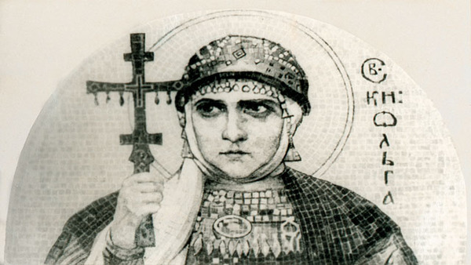
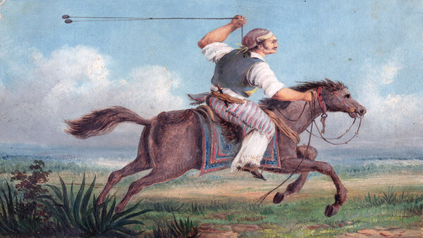
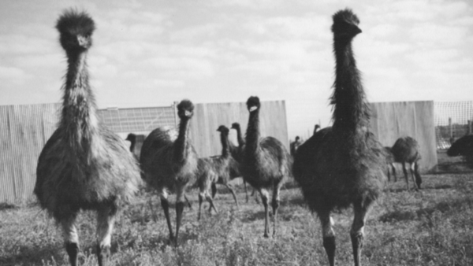

Europa

Olga de Kiev, reina y santa de Kievan Rus.
África
 Reina Nzinga, reina de Ndongo y Matamba.
Reina Nzinga, reina de Ndongo y Matamba.
Asia
 La rebelión Taiping: La guerra civil más sangrienta de la historia.
La rebelión Taiping: La guerra civil más sangrienta de la historia.
Norteamérica
 Rebeldes olvidados: La historia de los negros y los nativos americanos que lucharon por la CSA.
Rebeldes olvidados: La historia de los negros y los nativos americanos que lucharon por la CSA.
Sudamérica

Los Gauchos: Los vaqueros del hemisferio sur.
Oceanía

La Gran Guerra del Emú: Como unas aves derrotaron a un ejército.